ReLU 层的作用就像电路中的开关一样。正向传播时，有电流通过的话，就将开关设为 ON；没有电流通过的话，就将开关设为 OFF。反向传播时，开关为 ON 的话，电流会直接通过；开关为 OFF 的话，则不会有电流通过。
ReLU 层的作用就像电路中的开关一样。正向传播时，有电流通过的话，就将开关设为 ON；没有电流通过的话，就将开关设为 OFF。反向传播时，开关为 ON 的话，电流会直接通过；开关为 OFF 的话，则不会有电流通过。
现在，我们将计算图的思路应用到神经网络中。这里，我们把构成神经网络的层实现为一个类。先来实现激活函数的 ReLU 层和 Sigmoid 层。
激活函数 ReLU（Rectified Linear Unit）由下式（5.7）表示。
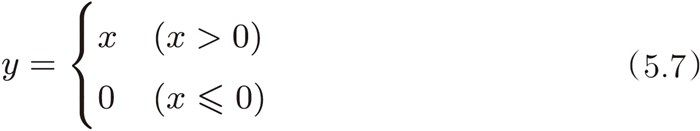
通过式（5.7），可以求出 y 关于 x 的导数，如式（5.8）所示。
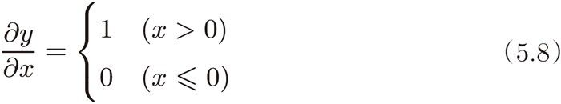
在式（5.8）中，如果正向传播时的输入 x 大于 0，则反向传播会将上游的值原封不动地传给下游。反过来，如果正向传播时的 x 小于等于 0，则反向传播中传给下游的信号将停在此处。用计算图表示的话，如图 5-18 所示。
现在我们来实现 ReLU 层。在神经网络的层的实现中，一般假定 forward() 和 backward() 的参数是 NumPy 数组。另外，实现 ReLU 层的源代码在 common/layers.py 中。
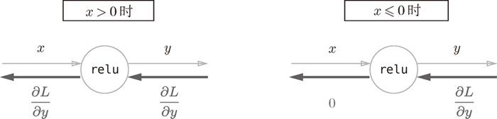
图 5-18 ReLU 层的计算图
class Relu:
def __init__(self):
self.mask = None
def forward(self, x):
self.mask = (x <= 0)
out = x.copy()
out[self.mask] = 0
return out
def backward(self, dout):
dout[self.mask] = 0
dx = dout
return dx
Relu 类有实例变量 mask。这个变量 mask 是由 True/False 构成的 NumPy 数组，它会把正向传播时的输入 x 的元素中小于等于 0 的地方保存为 True，其他地方（大于 0 的元素）保存为 False。如下例所示，mask 变量保存了由 True/False 构成的 NumPy 数组。
>>> x = np.array( [[1.0, -0.5], [-2.0, 3.0]] ) >>> print(x) [[ 1. -0.5] [-2. 3. ]] >>> mask = (x <= 0) >>> print(mask) [[False True] [ True False]]
如图 5-18 所示，如果正向传播时的输入值小于等于 0，则反向传播的值为 0。因此，反向传播中会使用正向传播时保存的 mask，将从上游传来的 dout 的 mask 中的元素为 True 的地方设为 0。
接下来，我们来实现 sigmoid 函数。sigmoid 函数由式（5.9）表示。
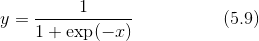
用计算图表示式（5.9）的话，则如图 5-19 所示。
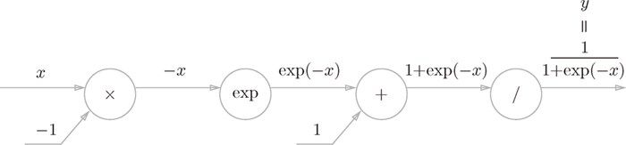
图 5-19 sigmoid 层的计算图（仅正向传播）
图 5-19 中，除了“×”和“+”节点外，还出现了新的“exp”和“/”节点。“exp”节点会进行 y = exp(x) 的计算，“/”节点会进行 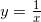 的计算。
如图 5-19 所示，式（5.9）的计算由局部计算的传播构成。下面我们就来进行图 5-19 的计算图的反向传播。这里，作为总结，我们来依次看一下反向传播的流程。
步骤 1
“/”节点表示 ，它的导数可以解析性地表示为下式。
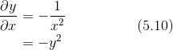
根据式（5.10），反向传播时，会将上游的值乘以  （正向传播的输出的平方乘以 -1 后的值）后，再传给下游。计算图如下所示。
（正向传播的输出的平方乘以 -1 后的值）后，再传给下游。计算图如下所示。
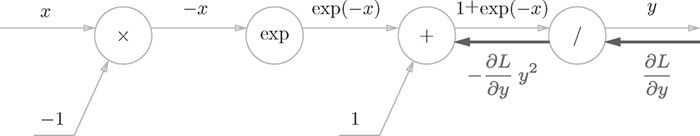
步骤 2
“+”节点将上游的值原封不动地传给下游。计算图如下所示。
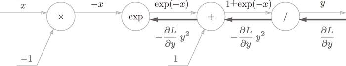
步骤 3
“exp”节点表示 y = exp(x)，它的导数由下式表示。
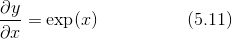
计算图中，上游的值乘以正向传播时的输出（这个例子中是 exp(-x)）后，再传给下游。
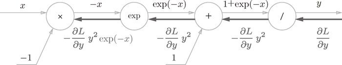
步骤 4
“×”节点将正向传播时的值翻转后做乘法运算。因此，这里要乘以 -1。
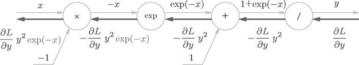
图 5-20 Sigmoid 层的计算图
根据上述内容，图 5-20 的计算图可以进行 Sigmoid 层的反向传播。从图 5-20 的结果可知，反向传播的输出为  ，这个值会传播给下游的节点。这里要注意， 这个值只根据正向传播时的输入 x 和输出 y 就可以算出来。因此，图 5-20 的计算图可以画成图 5-21 的集约化的“sigmoid”节点。
，这个值会传播给下游的节点。这里要注意， 这个值只根据正向传播时的输入 x 和输出 y 就可以算出来。因此，图 5-20 的计算图可以画成图 5-21 的集约化的“sigmoid”节点。
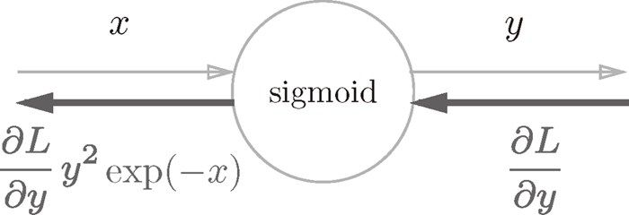
图 5-21 Sigmoid 层的计算图（简洁版）
图 5-20 的计算图和简洁版的图 5-21 的计算图的计算结果是相同的，但是，简洁版的计算图可以省略反向传播中的计算过程，因此计算效率更高。此外，通过对节点进行集约化，可以不用在意 Sigmoid 层中琐碎的细节，而只需要专注它的输入和输出，这一点也很重要。
另外， 可以进一步整理如下。
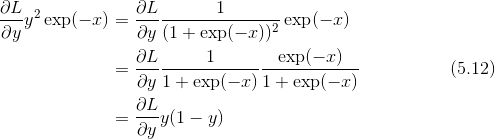
因此，图 5-21 所表示的 Sigmoid 层的反向传播，只根据正向传播的输出就能计算出来。
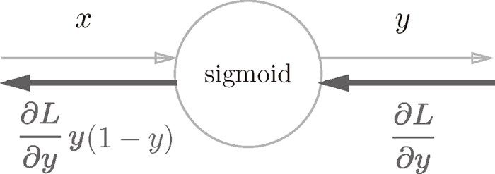
图 5-22 Sigmoid 层的计算图：可以根据正向传播的输出 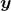 计算反向传播
现在，我们用 Python 实现 Sigmoid 层。参考图 5-22，可以像下面这样实现（实现的代码在 common/layers.py 中）。
class Sigmoid:
def __init__(self):
self.out = None
def forward(self, x):
out = 1 / (1 + np.exp(-x))
self.out = out
return out
def backward(self, dout):
dx = dout * (1.0 - self.out) * self.out
return dx
这个实现中，正向传播时将输出保存在了实例变量 out 中。然后，反向传播时，使用该变量 out 进行计算。